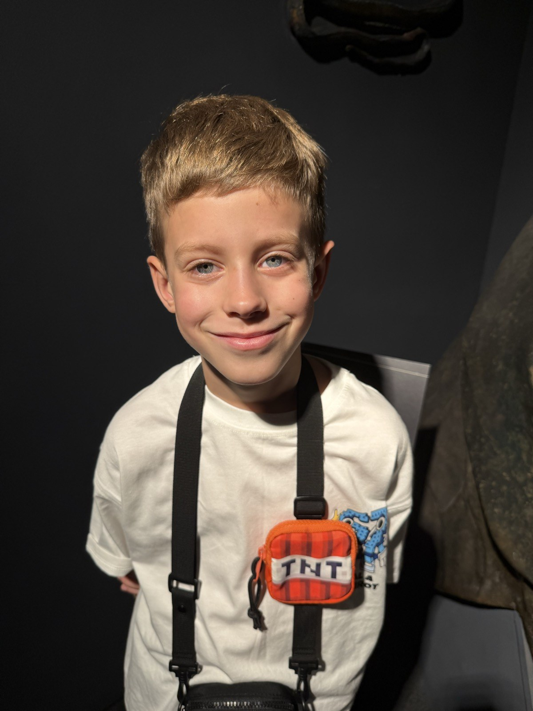
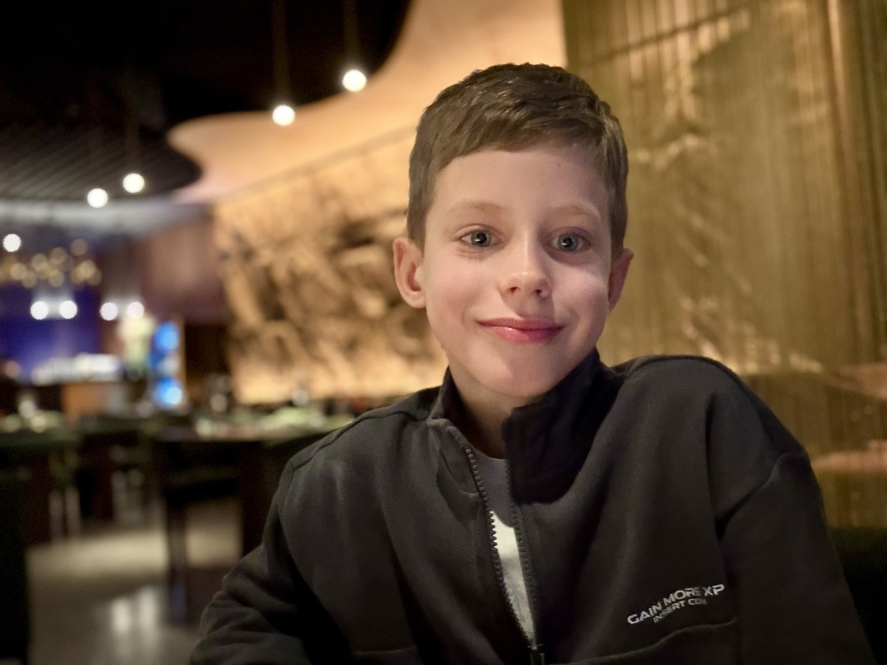

ІНСТРУМЕНТ 01
Мій MacBook Neo
Тут народжуються ідеї, зберігаються фото й пишеться код. Через SSH я підключаюся до Raspberry Pi.
МІЙ ЦЕНТР КЕРУВАННЯМені 9. Я починав з Arduino та зробив понад 10 роботів. Тепер відкриваю світ Raspberry Pi — по одному винаходу за раз.
До наступного відкриття ↗
Одна місія — одна нова навичка.
Рухаюся у своєму темпі й перевіряю,
що можу пояснити результат.
✳ Починаю з першої невиконаної місії. Кожну можна відкрити наперед, щоб побачити, що чекає далі.
Ноутбук допомагає писати код.
Raspberry Pi оживляє його.
Набір перетворює ідеї на схеми.
Тут народжуються ідеї, зберігаються фото й пишеться код. Через SSH я підключаюся до Raspberry Pi.
МІЙ ЦЕНТР КЕРУВАННЯМаленький комп’ютер, який керує світлом і читає датчики. 4 ГБ RAM, 64-бітна система та Python 3.13.
ПЛАТУ Й GPIO ПЕРЕВІРЕНОМакетна плата, світлодіоди, кнопки й датчики. Обираю корисні досліди з офіційного посібника.
ДЕТАЛІ ДЛЯ МОЇХ ВИНАХОДІВПід час перевірки 1 листопада 2026 року на Pi вже були Python 3.13.5, gpiozero 2.0.1, lgpio, smbus, smbus2, spidev і Thonny. Ініціалізація GPIO успішна; схеми ще не тестувалися.
sudo raspi-config, перезавантажте Pi та перевірте появу /dev/i2c-1. Визначте, який ADC є в наборі: ADS7830 чи PCF8591.Разом перед кожною схемою: коректно завершіть роботу Pi, від’єднайте живлення й лише тоді переставляйте проводи. GPIO має логіку 3,3 В: не подавайте на нього 5 В. LED підключайте через резистор. Дорослий перевіряє схему й орієнтацію шлейфа перед увімкненням.
Цей сайт показує маршрут та пояснення. Запуск програм відбувається окремо на Raspberry Pi.
Відкрити повний посібник Freenove (PDF, 26 МБ) ↗
Цікавість — мій суперзаряд ✳Моя історія з роботами почалася з Arduino. Я вже зробив понад 10 роботів — і хочу навчитися ще більше. Тепер поруч зі мною Raspberry Pi та ціла коробка можливостей.
Люблю шахи. У коді теж корисно спочатку придумати план, а потім перевірити свій хід.
Люблю свою школу Бойко в Харкові. Цікаві запитання зі школи беру із собою в майстерню.
Люблю своїх батьків, бабусь, дідусів і сестру Машу. Свої відкриття хочу ділити з ними.
Подорожі, усмішки та моменти,
які хочеться зберегти.
Мій особистий фотоальбом.
Ще два мої фото — на початку сайту та в розділі «Про мене».
Що вийшло? Що здивувало?
І який винахід хочеться зробити далі?
Копія містить нотатки та відмітки місій. Збережи її разом із дорослим, щоб перенести прогрес в інший браузер.
Як у шахах: кожен маленький хід
наближає до великого задуму.